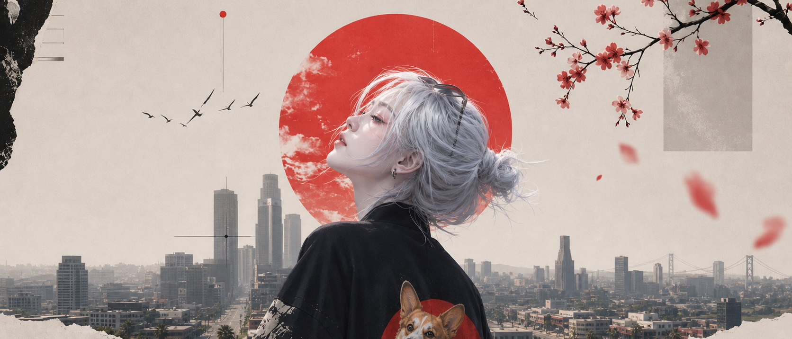

BABAK I · GERBANG
Film ini bukan tentang tempat.
Tapi tentang siapa yang menunggu di balik pintunya.
BABAK II · SAKURA
Kota ini berhenti sebentar untuk dia.
Bunga jatuh seperti cahaya yang turun perlahan.

BABAK III · KOTA
Dari atas, kota ini cuma suara.
Dan dia mendengarnya seperti musik yang tidak ingin berhenti.
BABAK IV · KOIN
Satu koin. Satu pilihan. Satu nama.
Percikan emasnya jatuh lebih lama daripada kejapannya.
BABAK V · ARSIP
Semuanya disimpan di sini.
Enam bingkai yang menolak dilupakan.
LEMARI · 06 BINGKAI
Arsip
Setiap bingkai bisa dibuka penuh, untuk dilihat dalam gelap, lalu diunduh. Tidak ada yang dikunci.
Geser otomatis · sentuh untuk menghentikan sejenak · pilih bingkai untuk membuka
FINALE
DIA
- Wajah yang menyambut kita setelah gerbangnya terbuka.
- Semua cahaya di babak sebelumnya berakhir di sini.